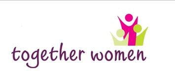

The following organisations can provide support and assistance.
Clicking on each image will take you directly to the relevant organisation's website.
https://www.togetherwomen.org/ Together Women provides holistic services to women and girls with multiple and complex needs across Yorkshire, Humberside and the North of England. The gender specific support for women and girls is flexible, responsive and dynamic. Women who come for support have their needs identified and addressed through various interventions. The centres offer safe, women-only spaces and a wide range of group programmes, training, workshops and self-help groups.
Women’s Aid provides refuge, assistance and emergency temporary accommodation for women and children fleeing domestic violence. It is run by women for women; providing specialist and tailored support services. The Outreach Team also provides a weekly support group and a safe space to talk through experiences and concerns. Participants can explore options, feelings, meet other survivors and share experiences and take part in creative recovery work.
IKWRO was founded in response to the need for culturally specific support, advocacy and counselling for women from Middle-Eastern backgrounds. IKWRO’s mission is to protect Middle Eastern women who are at risk of ‘honour’ based violence, forced marriage, child marriage, female genital mutilation and domestic violence. This organisations provides direct services for women and girls, including advocacy, training and counselling. IKWRO also supports professional bodies such as the police, social services and schools to help them to understand issues affecting minority ethnic women.